Elmålere
Manual for medlemmer
Aabenraa Sejl Club
Version november 2026
Havnens elstandere har en lille trådløs elmåler på hvert udtag. Målerne sender hele tiden deres målinger til klubbens server, og elmålersystemet gemmer forbruget hvert kvarter. Du kan derfor altid se, hvor meget strøm din båd bruger – også lige nu – på din telefon eller computer.
Systemet bruges også til afregningen af vinterstrøm (november–marts): hver måned placeres båden i en forbrugsgruppe ud fra månedens forbrug, og det samlede beløb opkræves ved standerhejsning.

Du får en e-mail med en invitation, når havnekontoret har oprettet dig. Klik på linket og vælg en adgangskode. Herefter logger du ind på klubbens elmåler-adresse.
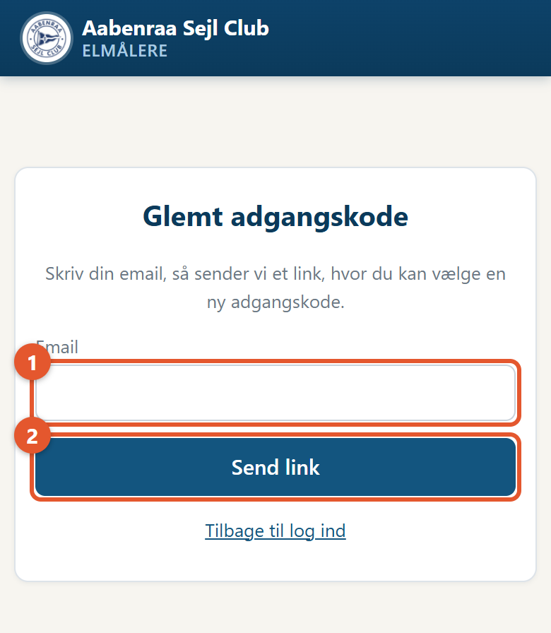
Kommer der ingen e-mail, så tjek spam-mappen – eller bed havnekontoret sende et nyt link.
Så åbner elmålerne som en app med klubbens logo:
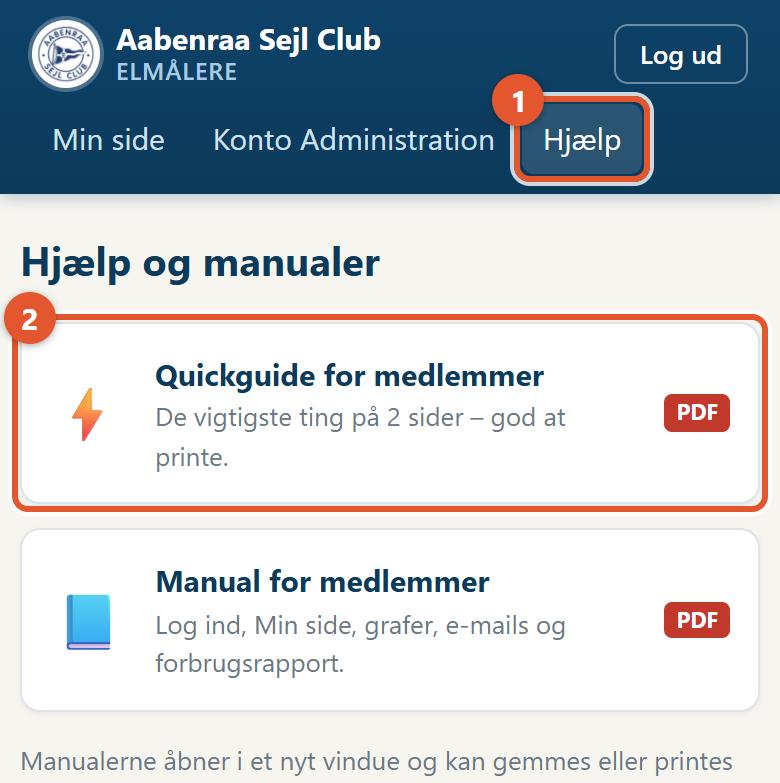
Quickguiden kan også åbnes fra login-siden via Hjælp til at komme i gang – uden at logge ind.
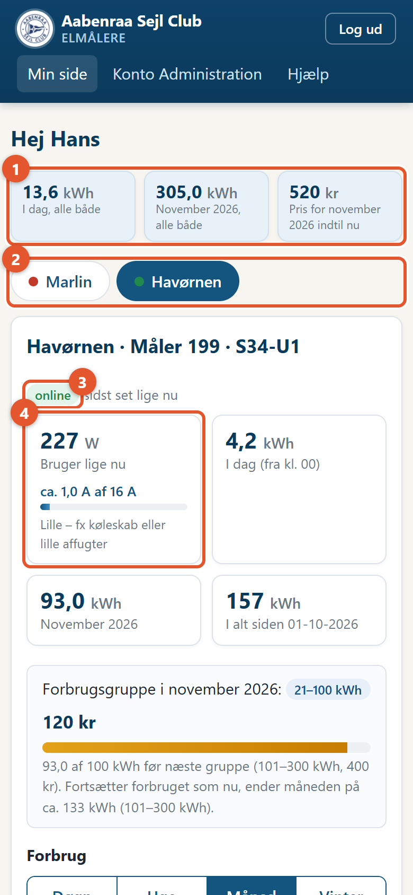
Øverst på kortet står bådens navn, målernummeret og placeringen (fx S34-U1 = stander 34, udtag 1).
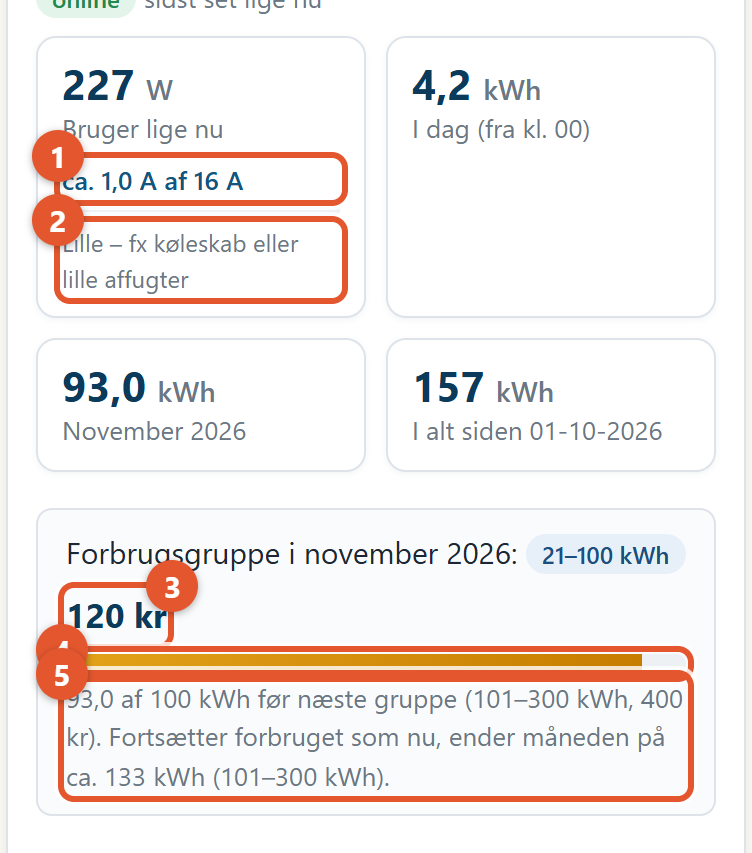
Kortene I dag, måneden og I alt viser forbruget i kWh. I dag regnes altid fra kl. 00:00.

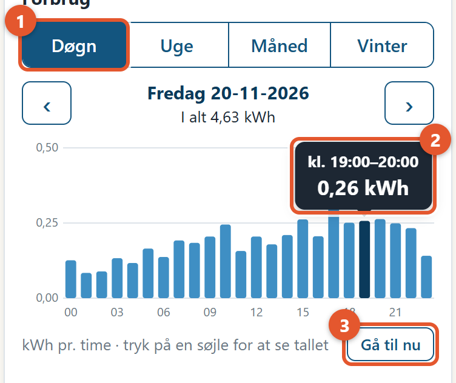
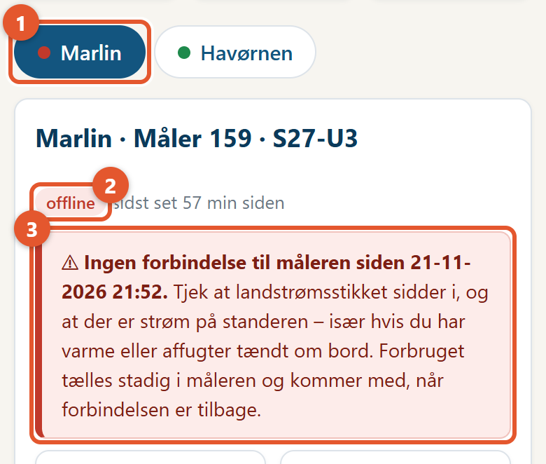
Det sker oftest, fordi landstrømsstikket er taget ud, eller fordi strømmen til standeren er afbrudt. Har du varme eller affugter tændt om bord, så tjek det hurtigst muligt.
Du kan få en e-mail, når forbindelsen har været væk i mere end en time (se næste afsnit).
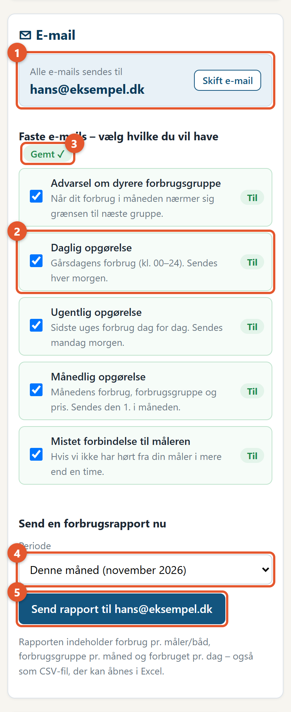
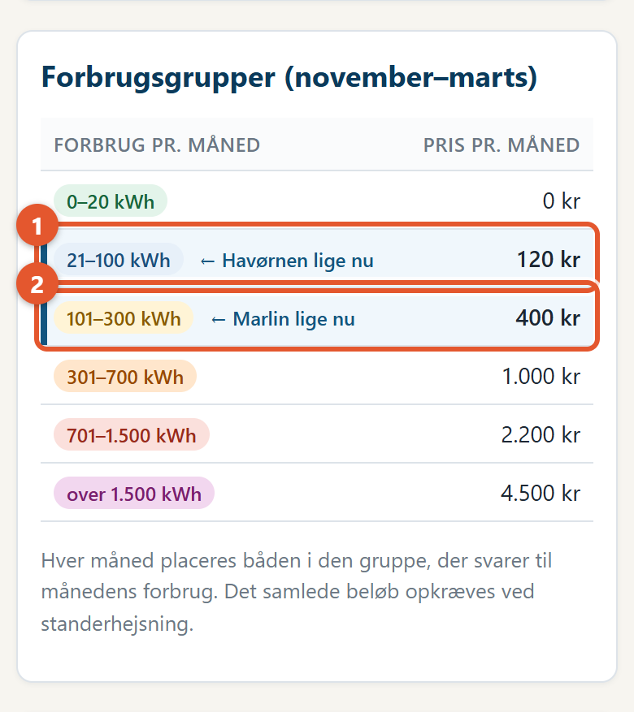
Nederst på Min side står forbrugsgrupperne og priserne.
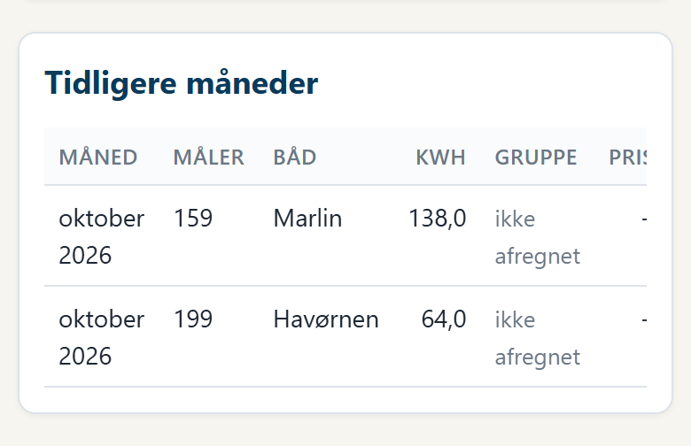
Tidligere måneder viser de afsluttede måneder med forbrug, gruppe og pris pr. båd. Tallene er låst den 1. i måneden efter og ændres ikke. Måneder uden for november–marts står som ikke afregnet.
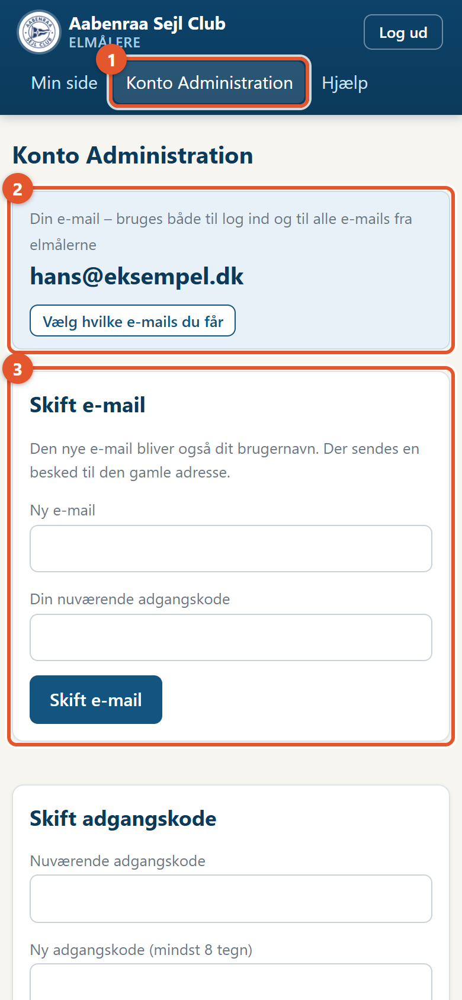
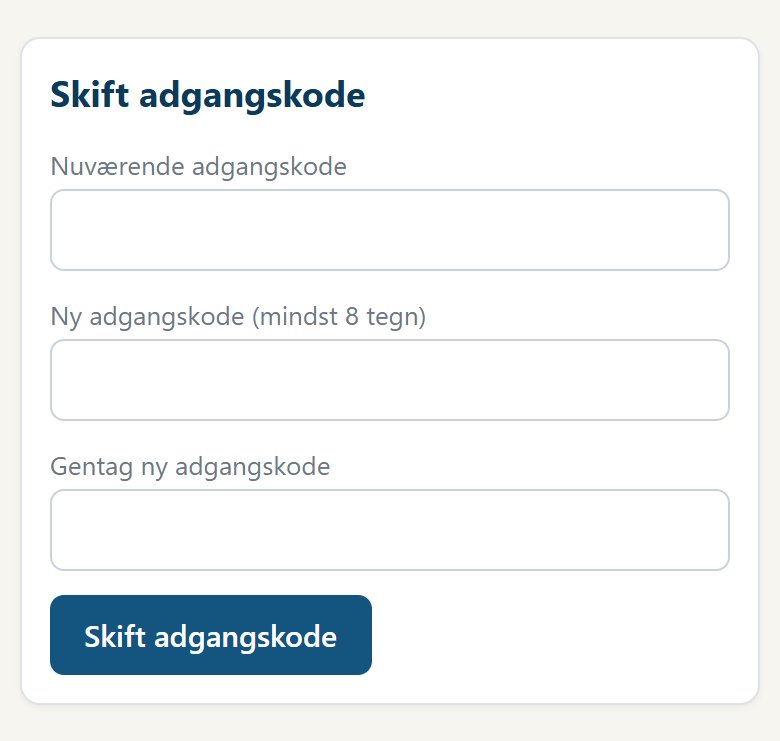
Skift adgangskode: skriv den nuværende og den nye to gange. Du bliver logget ud på dine andre enheder.
Fra 1. november til 31. marts placeres hver båd hver måned i en forbrugsgruppe ud fra månedens forbrug (afrundet til hele kWh). Har en båd flere målere, eller et medlem flere både, opgøres hver måler/båd for sig.
| Forbrug pr. måned | Pris pr. måned |
|---|---|
| 0–20 kWh | 0 kr |
| 21–100 kWh | 120 kr |
| 101–300 kWh | 400 kr |
| 301–700 kWh | 1.000 kr |
| 701–1.500 kWh | 2.200 kr |
| over 1.500 kWh | 4.500 kr |
Det samlede beløb for vinteren opkræves ved standerhejsning. Priserne kan ændres af bestyrelsen – den gældende prisliste står altid på Min side.
Måleren er ikke tildelt dig endnu, eller tildelingen er afsluttet. Kontakt havnekontoret med bådens navn og hvilken stander/udtag du bruger.
Tjek at stikket sidder i, og at der er strøm på standeren. Forbruget tælles stadig og kommer med senere. Er den stadig offline næste dag, så kontakt havnekontoret.
Måleren har endnu ikke sendt noget. Det sker normalt inden for få minutter, når den har strøm. Ellers kontakt havnekontoret.
Tjek dine valg under Min side → E-mail, og kig i spam-mappen. Tjek at din e-mail er stavet rigtigt under Konto Administration.
Se døgnvisningen time for time – så kan du se, hvornår strømmen er brugt. Tænk på varmeblæsere, affugtere og ladere. Er der stadig noget galt, så kontakt havnekontoret; systemadministratoren kan undersøge målingerne.
Hvert udtag er sikret med 16 A. Bliver bjælken orange, trækker båden over ca. 12 A, og sikringen kan springe, hvis der tændes mere.
Andre medlemmer kan ikke. Havnekontoret kan se alle målere – det er nødvendigt for afregningen.
Havnekontoret – for målere, både, afregning og log ind. Havnekontoret kontakter systemadministratoren ved tekniske fejl.